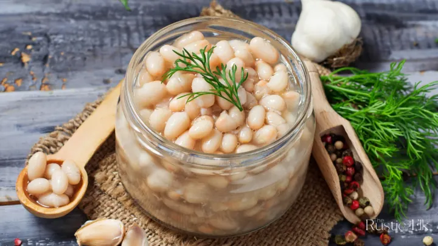

Simple Beans

Beans!
This is a simple recipe you can prep ahead of time
All you need is some dried beans, salt and water
Ingridients
- Beans
- Salt
- Water
- Seasonings of choice
Steps for making the beans
- In a large pot pour beans and cover with water
- Let beans soak for a few hours or overnight
- After lettings beans soak bring to a boil and then reduce heat to let simmer
- Simmer beans for two to four hours or until soft and tender
- Season with salt and seasonings of choice